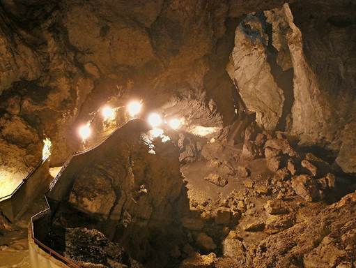
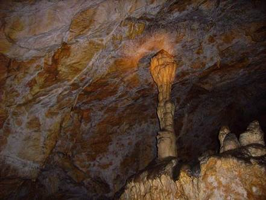

| Намира се на стръмен горист склон на левия бряг на р. Кастраклийска, на изток от хижа
Орфей, на около 200м по-високо. Изходен пункт е хижа Орфей, достъпна с кола от село Борино по 6км черен път, който е добре поддържан.
От хижа Орфей до входа на пещерата се стига за половин час. |
 |
|  | Проникването в пещерата се осъществява само от екипирани пещерняци. Входът й е на изпъкнало било
покрито със скални образования наподобяващи широк овален отвор с диаметър 2-3м.Дъното на пещерата представлява просторна зала, покрита
с блокаж и нападали дървета. От залата, заставайки с гръб към входа, напред и леко в дясно тръгва сравнително тясна хоризонтална
диаклаза, на места с едри дендрити по стените. |